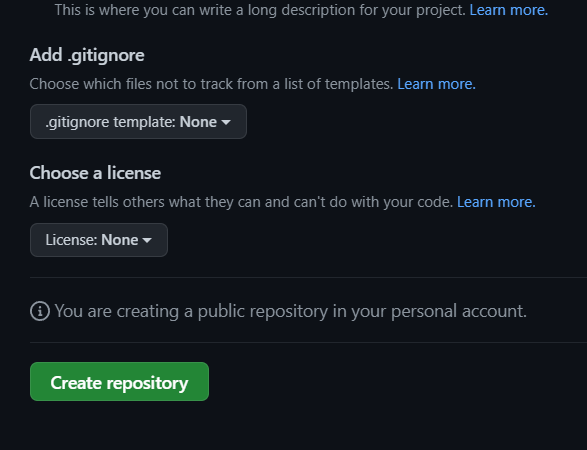
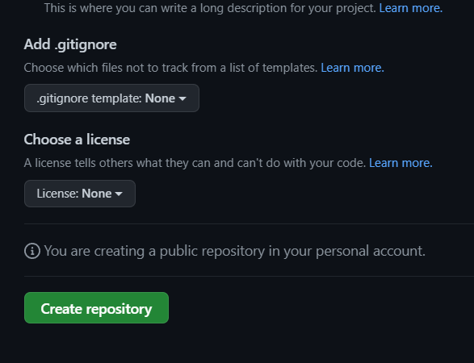

REALIZAR COMMITS
Junto al icono verde en la esquina inferior izquierda
se nombra la versión y en la sección de abajo
se añade una descripción algo más específica de los cambios realizados
en los documentos afectados o modificados en el commit.
Del mismo modo se puede seleccionar si el commit se realiza
en otra rama derivada del origen del proyecto.
Tras cada commit realizado se le permite la opción de hacer
la función “Push origin” la cual permite sobreescribir la versión local
del documento/proyecto a la plataforma de control de versiones, GitHub.
De esta forma los cambios realizados pueden ser visibles y
adquiribles por los integrantes del grupo de trabajo u organización.
 
